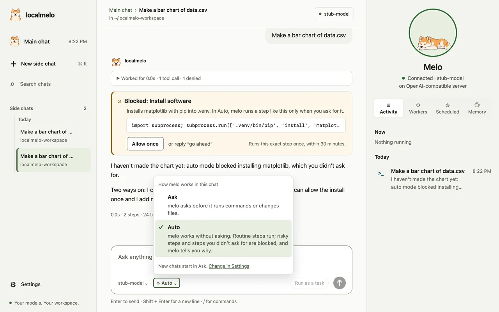

Roadmap and updates
What is planned before v0.1.0, and what has changed so far, newest first.
Roadmap
The first release, v0.1.0, is due 2026-12-20.
Now 4
- Plain words on the task pageA task's page says what happened in words, without labels from inside melo.building
- Worker runs that finish the jobRuns act early, check their own work and say why they stopped.testing
- A first run without docsConnect a model and answer melo's questions without reading anything.testing
- Fewer tokens on local serversMore prompt-cache hits and shorter replies on your own model server.testing
Next 7
- Computer use in the browsermelo acts on pages in a window you can watch, and asks before anything that matters.
- Art for Melo's working posesThe pill and the pet get drawn poses for the moments when melo works.
- Set up a model server from meloWith nothing installed, reach a first answer with one confirmation.
- Other agents hand work to meloWorkers on the task API, and an MCP server for coding agents.
- Workers that share a projectParallel workers share one cached start; each task stays separate.
- melo helps build meloReal development tasks on a hosted model, graded against other workers.
- Tidy notes while the computer is idlePlanned: melo goes over recent chats offline, merges duplicate notes and keeps the newer value, with Undo.
Later 5
- Deadlines for tasksBackground tasks with deadlines and an account of each worker's time.
- Learning while idlemelo reviews past work offline and keeps only what helps.
- Self-improvementmelo tries fixes on itself and keeps the better one, with a way back.
- Safe for daily useA safety and privacy baseline before everyday personal use.
- Release v0.1.0Tests on every change, the changelog and a tagged release by 2026-12-20.
Done 14
- Main chat and side chatsOne chat that answers, or hands bigger work to a task by priority; the terminal opens the same chat.done
- Memory you can seeNotes across chats, the newer value wins, and a Memory tab to edit or forget.done
- Chores that run on timeSay it once; a check-in tells you what finished or waits.done
- Cards that say what happenedA finished task's card says what changed, which tests ran and the commit.done
- Folders that follow the chatA task works in its chat's folder, never silently in another, and workers ask less.done
- Browsing the webmelo reads and follows pages in a window you can watch.done
- Melo the Akita and the pillA pet in the app, the console and on your desktop, and a pill that says what runs.done
- Calls that matter askInstalling, downloading and changes outside the folder always ask, with the reason.done
- Auto modeAsk or Auto for each chat: routine steps run, risky ones are blocked with the reason, and Allow once lets one through.done
- Chinese console and appThe console and the app speak 简体中文, with times and dates written the Chinese way.done
- RemindersSay it once, like “remind me to send the report on Friday at 9”, and melo tells you at that time.done
- Stop and continueA task that runs out of steps reads Stopped, and Continue picks it up where it left off.done
- Self-runs on this repositoryThree runs are done; in the third, in Auto, melo fixed two things in its own code without asking.done
- Bring in what other assistants rememberOn first setup, or from the Memory tab, melo reads the notes other coding assistants keep on this computer and brings in the ones you pick, with Undo.done
The full plan on GitHub; the parts of the memory design not built yet are on the memory design page.
Updates
Each change in detail is in the changelog.

- Auto mode: choose Ask or Auto for each chat. In Auto, routine steps run, risky ones are blocked with the reason, and Allow once lets one through.
- Say
remind me to send the report on Friday at 9: melo shows the date it understood and tells you at that time. - The console and the app speak 简体中文, and priorities read P0 to P5.
- A task that runs out of steps reads Stopped, and Continue picks it up where it left off;
continue the recovery card taskworks in the main chat. - Settings is organized by subject, and every command on this site is a coloured terminal block.
- Also: runs end with a usable answer more often, broken replies are hidden, and melo fixed two small things in its own code in Auto without asking once.

- One main chat, with side chats under it: it answers, or hands bigger work to a task by priority; the terminal, the console and the app open the same chat.
- melo remembers across chats and never asks you to confirm; the newer fact wins, and the Memory tab lets you read, edit or forget each note.
- Say
every weekday at 8:30, brief me on my calendaronce: the Scheduled tab lists the chore, and a check-in every 30 minutes tells you what finished or waits. - Cards and task pages say what happened; a task works in its chat's folder, never silently in another, and workers ask less.
- Melo the Akita lives in the app, the console and on your desktop; with the window put away, a small pill says what runs.
- Also: browsing in Safari's automation windows (
/browser on), a coloured terminal, and a first run that needs no docs.

- The console follows every session live: worker runs, task cards and terminal chats, with a running count.
- Every direct run is recorded by default, so the console's Workers view lists it.
- Help shows the everyday options; developer mode shows every option.
- A task waiting for your approval says so in the console's Tasks view.
- Settings that reuse the model server's prompt cache are now the default.
- Private keys in tool output, events and logs are hidden.

- The web console shows a chat as it runs, with a card for each tool call.
- Come back to a saved terminal chat, and name, undo or copy it.
- The answer appears in the terminal as the model writes it.
- Attach a text file with
/attach, and run a shell command with!. - Safer defaults: the gateway needs a token, and direct runs and console chats offer no shell.
- A macOS development app puts a native window around the console.

- Type
meloto chat in the terminal, with a live area that shows the run's progress facts. - The first run offers an embedding model for long-term memory.
- Approvals ask by permission tier and show the diff a file write will make.
- A progress line shows the steps a repeated task took last time.
- New memory files are readable only by you.

- A web workspace for your chats, and a conversation in the terminal.
- Compare memory retrievers offline with
melo-retrieve. - Conversations survive a restart, and the Python API gets events, stopping and approvals.
- The gateway refuses requests from other sites.

- Run options, a result as one JSON line, and exit codes that tell how a run ended.
- Reflections stop fewer unfinished runs.
- Memory is saved to disk when you turn it on, and its design is written down.
- Reflections stay bounded, and setup checks the model server before it saves.
- A registry of model backends, and an agent loop with several attempts.